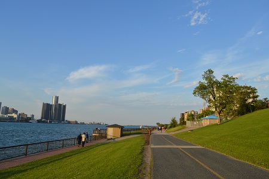
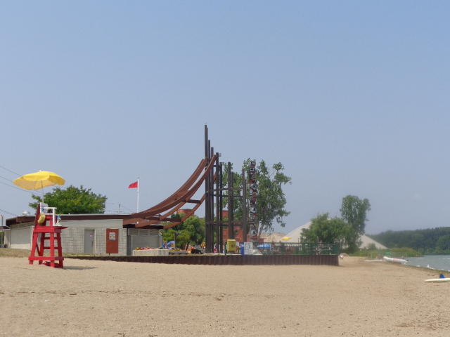

Riverside
The waterfront is a great place to walk. The city has done a marvelous job of levelling, installing plenty of walkways, interesting monuments and superb gardens. Restaurants are above on Riverside and there is usually a nice breeze along the water.
|  |
Sandpoint Beach
Well maintained beach, summer lifeguards on duty occassionally beach closed due to poor quality water. Ringed swimming as strong deep water beyond markers. Change room with washrooms on site. Volley ball sand pits. No food take out area..
|  |
Jackson Park
This by far is my favourite park in the city of Windsor. The flower beds are always so nice, it is well groomed. The stone walkways, the spitfire plane the rolling lawns..
 |